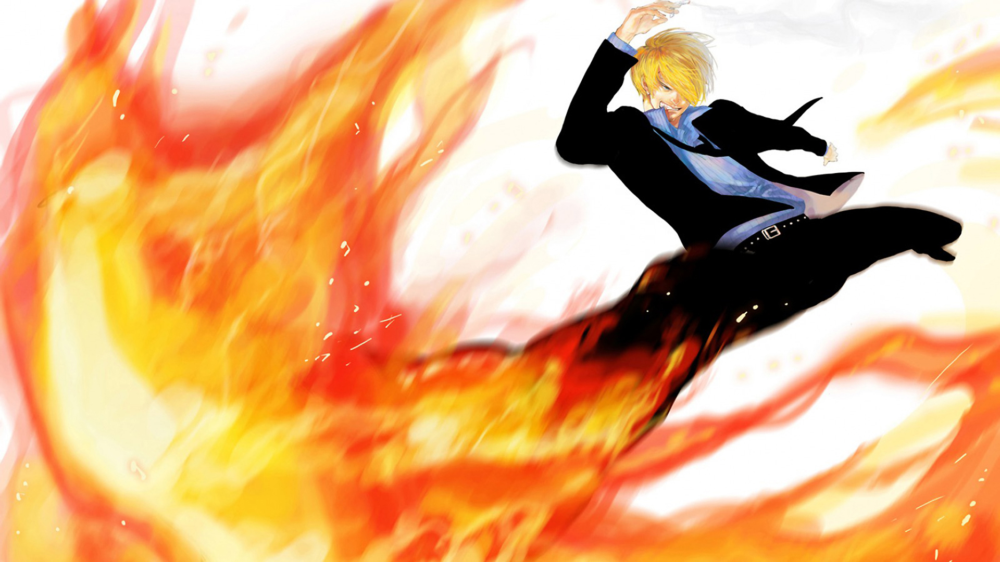

O mundo de One Piece é repleto de piratas buscando glória e poder, e foi o próprio One Piece que gerou tudo isso. Quando Gol D. Roger declarou no dia da sua morte a existência do tesouro, ele colocou o mundo inteiro na agora conhecida como Era dos Piratas.